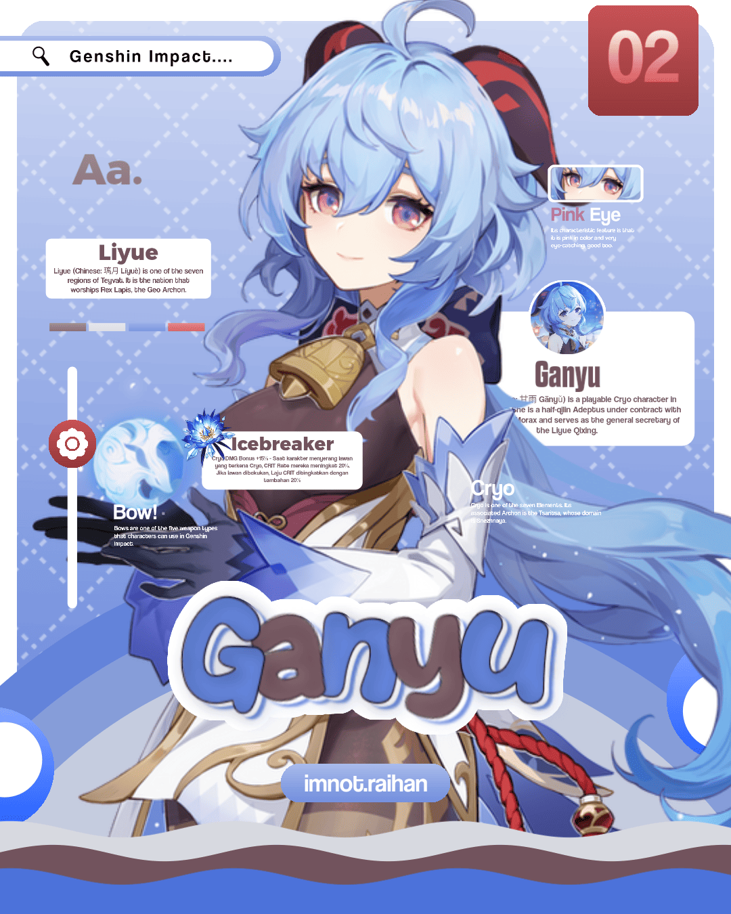
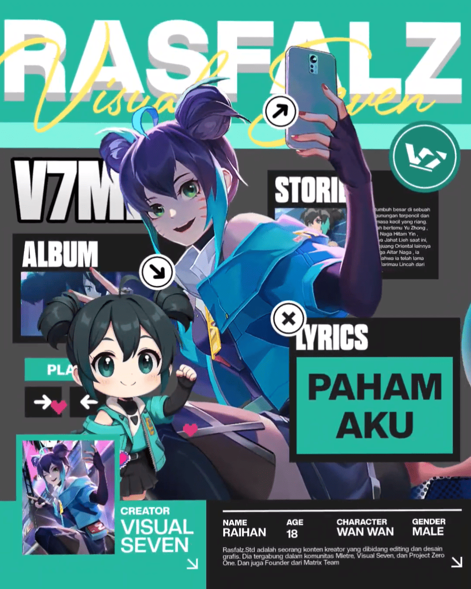
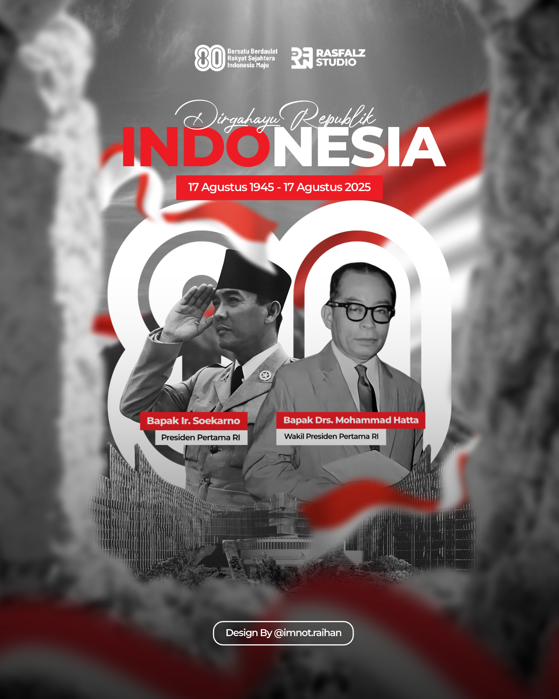
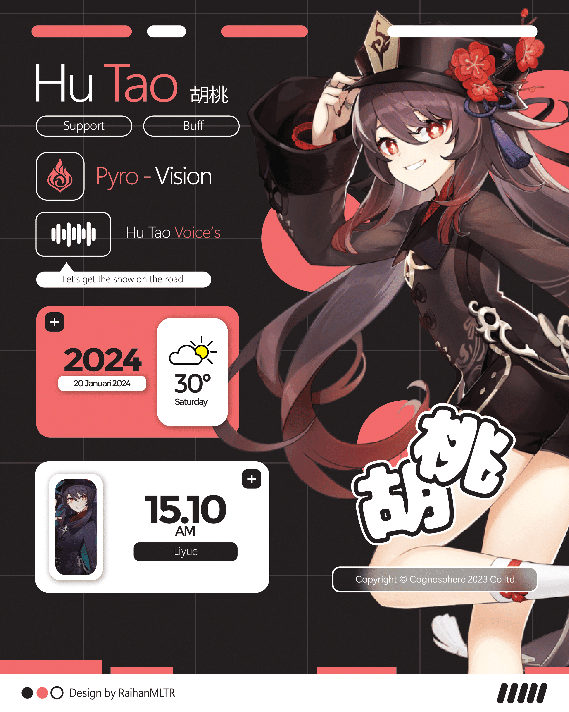
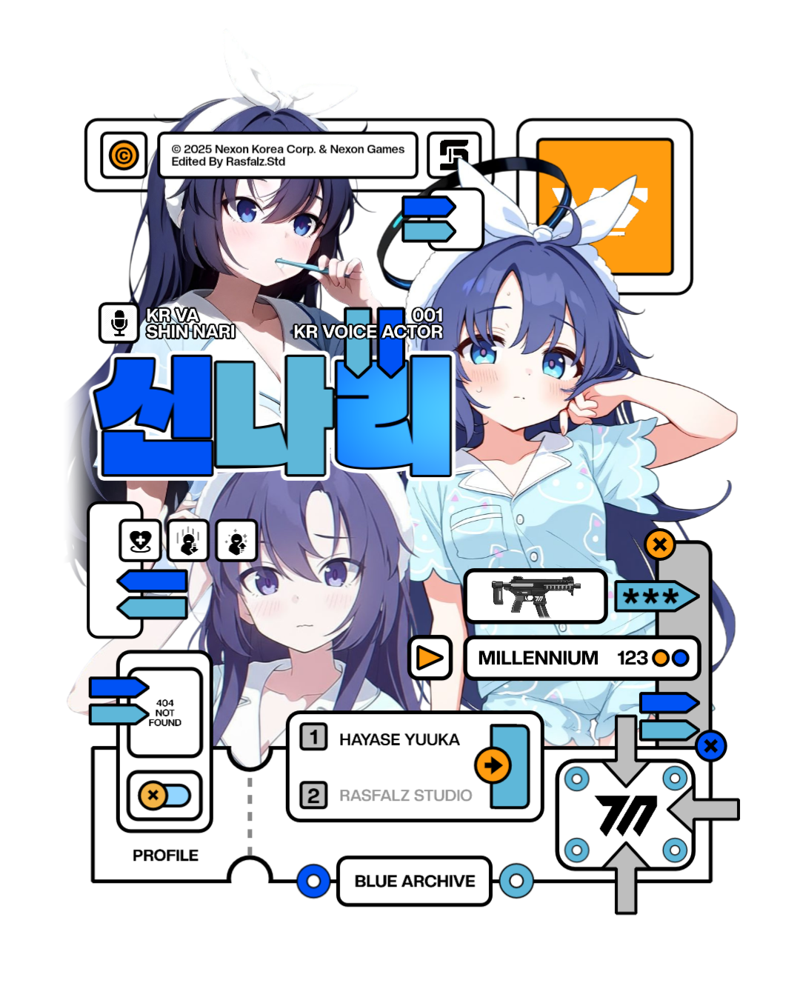
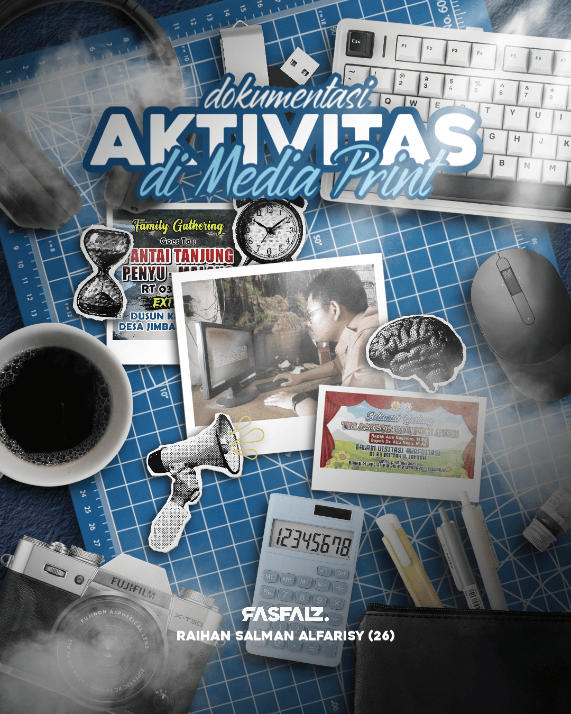

Proyek Ganyu Genshin GFX
Karakter Ganyu dari Genshin Impact dengan eksplorasi visual bergaya candy/cute.
Halo! Namaku Raihan Salman Alfarisy. Saya adalah seorang pengembang web dan desainer grafis yang antusias dalam pembuatan desain visual serta pengembangan aplikasi web yang responsif dan fungsional.

Karakter Ganyu dari Genshin Impact dengan eksplorasi visual bergaya candy/cute.

Desain visual karakter Wan Wan Mobile Legends dengan sentuhan gaya cyberpunk modern.

Komposisi bertema pahlawan nasional Bung Karno & Hatta berlatar Istana IKN.

Eksplorasi antarmuka Web UI/UX tematik karakter Hu Tao dari Genshin Impact.

Desain grafis bertema karakter Hayase Yuuka dengan pendekatan tipografi Neo-Brutalism.

Ilustrasi perlengkapan kerja magang mencakup keyboard, mouse, kamera, dan kopi.